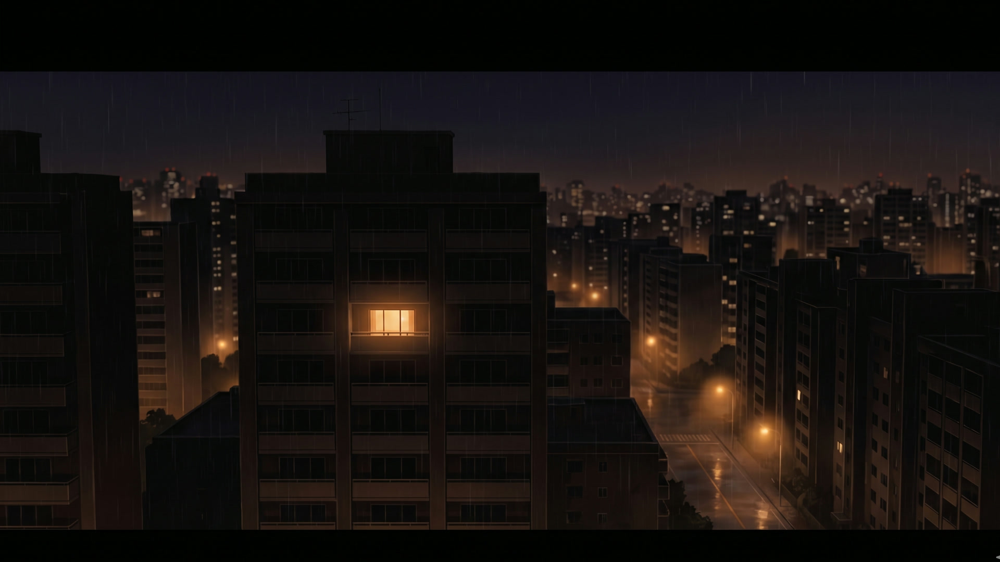
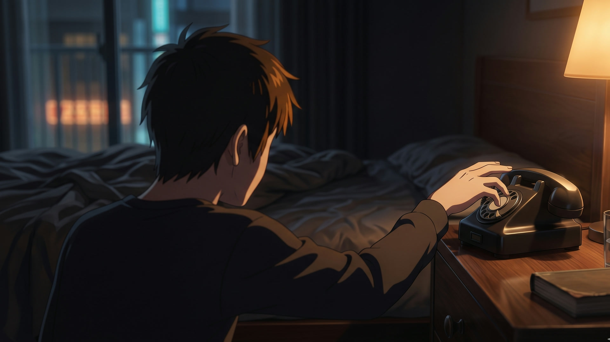

It’s three fourteen in the morning.

There used to be radio shows for this.

Most of them are gone now.

So we tried to bring one back.
ON AIR
A LATE-NIGHT RADIO SHOW
After Midnight
Listening at 3 AM, since tonight.
YOU’RE ON THE AIR
A song. Written for you. While you talk.
LIVE GENERATION · 60 SECONDS · WITH VOCALS
+ WRITTEN FOR YOU
Or take the chair.
THREE CALLERS · ONE QUIET HOUR

The voices are real. The songs are real.
After Midnight
Built for #ElevenHacks · Hack #6
@zeddotdev × @elevenlabsio
@zeddotdev × @elevenlabsio
after-midnight-nine.vercel.app